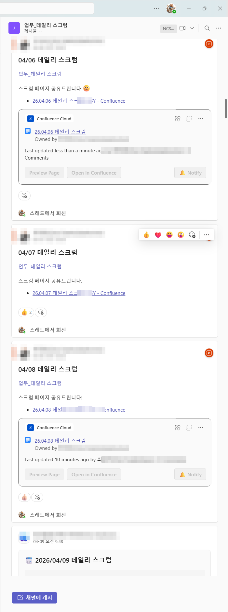
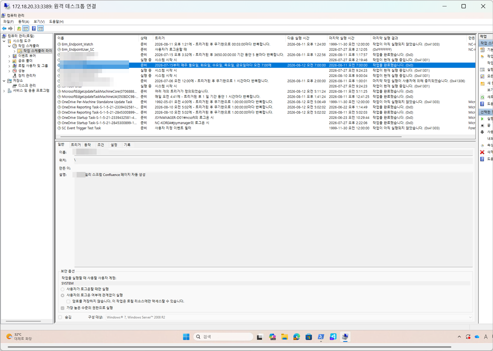
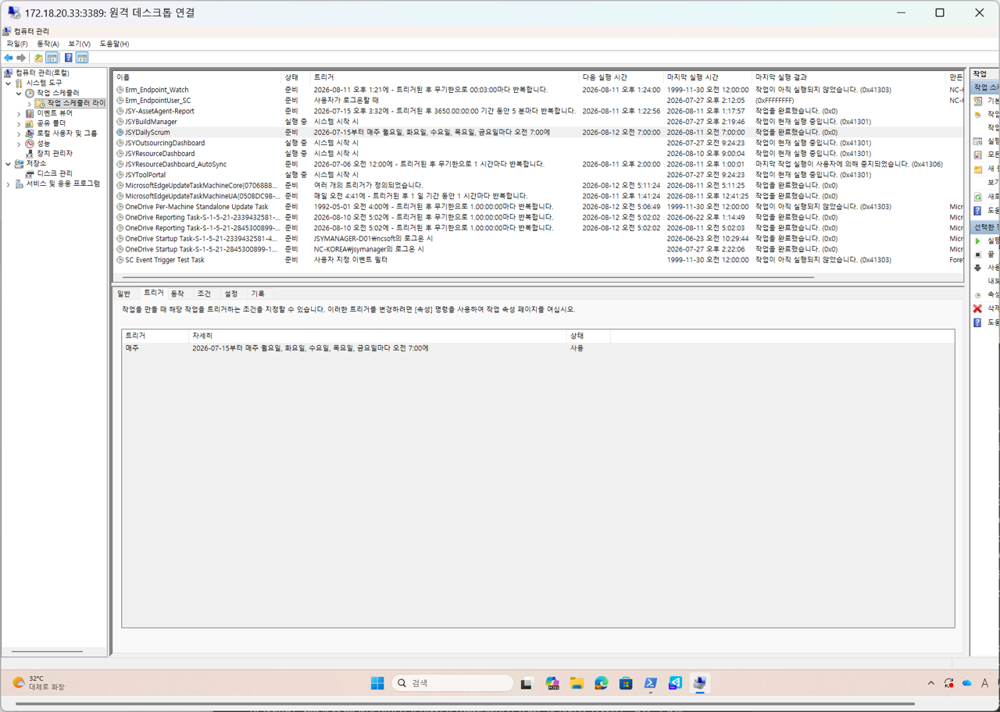
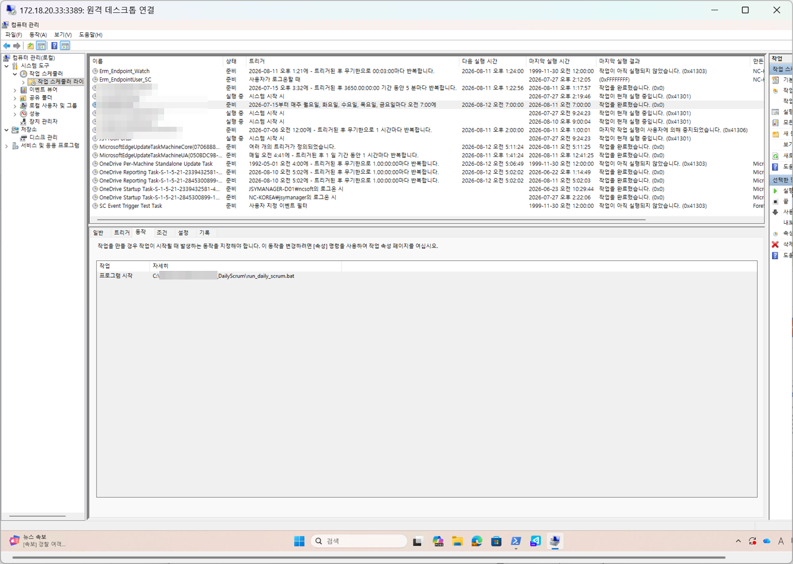
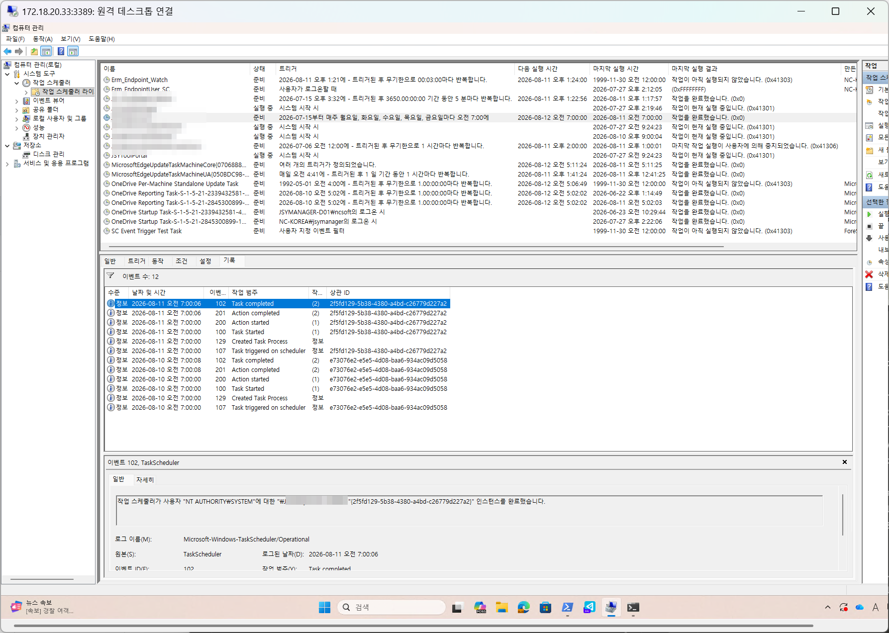
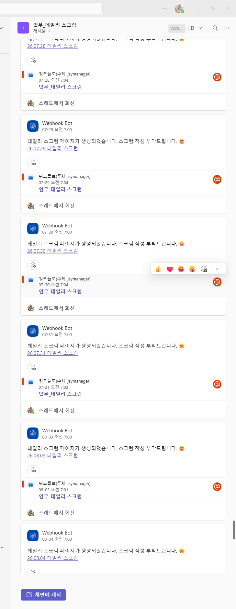

1
Problem · 문제 상황
매일 아침, 누군가가 스크럼 페이지를 만들어야 했다
팀은 매일 Confluence에 데일리 스크럼 페이지를 만들고, Teams 채널에 링크를 공유했습니다. 전날 "오늘 할 일"을 다음 날 "어제 한 일"로 옮기는 것도 수작업이었습니다. 단순하지만 매일 반복되는 이 작업이 담당자에게 부담이 됐습니다.
매일 수기 페이지 생성
영업일마다 Confluence에 새 스크럼 페이지를 직접 만들어야 했습니다
수동 이관 작업
전날 "오늘 할 일"을 오늘 "어제 한 일"로 복사하는 수작업이 반복됐습니다
매일 Teams 공유 필요
페이지 생성 후 Teams 채널에 링크를 직접 공유해야 팀이 인지했습니다

자동화 이전 Teams 채널. 담당자가 직접 Confluence 링크를 올렸고, 4/09부터는 Webhook Bot이 자동 발송으로 전환된 것을 확인할 수 있습니다.
2
Solution · 해결 방법
매일 07:00, 스케줄러가 모든 것을 처리한다
Python 스크립트가 Confluence API로 전날 페이지를 읽고, 규칙에 따라 당일 페이지를 생성한 뒤 Teams에 알림을 보냅니다. Windows Task Scheduler에 등록되어 사람이 없어도 자동으로 실행됩니다.
07:00 자동 실행
→
전날 페이지 읽기
→
오늘 할 일 → 어제 한 일
→
새 페이지 생성
→
Teams 알림 발송
실행 시각
매일 오전 07:00
토/일/공휴일 자동 제외 (holidays 라이브러리 KR 기준)
페이지 이관 규칙
오늘 할 일 → 어제 한 일
텍스트·이미지·동영상 첨부 포함 전체 복사
중복 생성 방지
동일 제목 감지 후 스킵
이미 존재하는 페이지는 생성하지 않고 넘어감
알림 분리
팀 채널 / 개인 채널
구조 이상은 개인 알림, 생성 완료·오류는 팀 전체 알림

작업 스케줄러에 JSYDailyScrum 등록. 매주 월~금 오전 7:00 실행으로 설정됐습니다.

트리거 상세. 2026-07-15부터 매주 월·화·수·목·금요일 오전 7:00 실행.

동작 설정. run_daily_scrum.bat 파일을 실행해 Python 스크립트를 구동합니다.

실행 기록. 2026-08-11 오전 7:00:06에 Task completed. 매일 정상 실행 중.
3
Result · 결과
아침 7시, 아무도 없어도 스크럼 페이지가 만들어진다
팀원들은 출근해서 Teams 알림을 확인하고 Confluence 링크를 클릭하면 됩니다. 페이지 생성·이관·공유까지 전 과정이 사람 없이 자동으로 처리됩니다.
100%
스크럼 수작업 제거
페이지 생성·이관·Teams 공유 전 과정 자동화
매일
무중단 운영
담당자 부재 시에도 07:00에 정확히 실행
자동
공휴일 제외
한국 공휴일·주말은 자동으로 건너뜀
분리
알림 체계
오류·이상은 담당자 개인 채널로만 전달해 팀 노이즈 최소화

자동 생성된 26.08.11 데일리 스크럼 페이지. 왼쪽 사이드바에 날짜별 페이지가 누적됩니다. 어제 한 일은 전날 "오늘 할 일"에서 자동 이관됩니다.

자동화 후 Teams 채널. Webhook Bot이 매일 오전 7:00에 "데일리 스크럼 페이지가 생성되었습니다" 알림과 함께 Confluence 링크를 자동 발송합니다.
Insight
"단순 반복 작업을 자동화할 때 가장 중요한 건 예외 처리입니다.
공휴일 제외, 중복 생성 방지, 구조 이상 감지처럼 '만약에'를 미리 설계해두지 않으면 자동화가 오히려 혼란을 만듭니다.
현업 경험이 있어야 이 예외들을 제대로 정의할 수 있습니다."
공휴일 제외, 중복 생성 방지, 구조 이상 감지처럼 '만약에'를 미리 설계해두지 않으면 자동화가 오히려 혼란을 만듭니다.
현업 경험이 있어야 이 예외들을 제대로 정의할 수 있습니다."